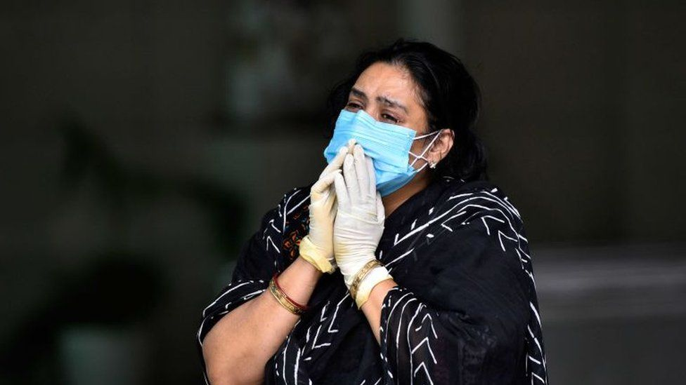

India has been hit by a huge second coronavirus wave, but its government has said the pandemic is showing signs of slowing down in some regions.
posted by Claudiu Stefan
India's surge in infections began around mid-March and increased rapidly, reaching a peak of more than 400,000 recorded daily cases on Friday, 30 April. Over subsequent days the numbers fell, with just under 360,000 on Monday, 3 May - leading to speculation that a peak had been reached. But in the past few days, they have started to rise again, in line with a weekly pattern of fluctuations that shows the numbers usually dipping on a Monday.